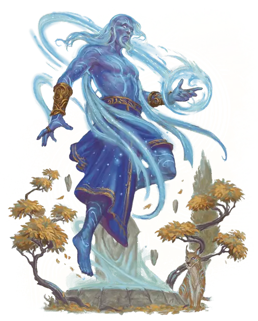

Тайсу
Taisus
Огромная Аберрация, Хаотичная Нейтральная

Класс Защиты 18 Инициатива +10 (20)
Хиты 310 (27к12 + 135)
Скорость 40 футов, Полёта 60 футов
| мод | спас | ||
|---|---|---|---|
| СИЛ | 17 | +3 | +3 |
| ЛОВ | 18 | +4 | +10 |
| ТЕЛ | 20 | +5 | +11 |
| мод | спас | ||
|---|---|---|---|
| ИНТ | 25 | +7 | +13 |
| МДР | 22 | +6 | +12 |
| ХАР | 19 | +4 | +4 |
Иммунитеты Яд; Испуганный, Истощение, Окаменевший, Опутанный, Отравленный, Очарованный, Парализованный, Схваченный
Чувства пассивное Восприятие 22, Истинное зрение 120 футов
Языки Все, Телепатия 120 фт.
Опасность 19 (22 000 опыта; БВ +6)
Особенности
Волшебное бессмертие. При смерти тайсу его тело рассыпается мерцающей пылью. Спустя 1к10 дней он обретает новое тело и возрождается со всеми Хитами, если только на его останки не было сотворено Желание, чтобы предотвратить срабатывание этой особенности. Новое тело появляется в незанятом пространстве в пределах 5 футов от места, выбранного тайсу при его создании.
Легендарное сопротивление (4/день). Если тайсу проваливает спасбросок, он вместо этого может в нём преуспеть.
Сопротивление магии. Тайсу совершает с Преимуществом спасброски от заклинаний и прочих магических эффектов.
Действия
Мультиатака. Тайсу совершает две атаки Опустошением мозга.
Опустошение мозга. Бросок рукопашной атаки: +13, досягаемость 20 фт. Попадание: 20 (3к8 + 7) Силового урона плюс 16 (3к10) Психического урона, и цель — существо с ячейками заклинаний, она подвергается следующему эффекту. Спасбросок Телосложения: Сл 21. Провал: У цели тратится ячейка заклинаний самого высокого уровня, которая ещё не потрачена.
Сотворение заклинаний. Тайсу сотворяет одно из следующих заклинаний, не нуждаясь в Материальных компонентах (заклинательная характеристика — Интеллект, Сл спасброска заклинаний 21):
Неограниченно: Волшебная рука, Невидимость, Обнаружение магии, Огненный шар, версия 5-го уровня
2/день каждое: Наблюдение, Планарный переход, Сияющий шторм Джалларзи
1/день каждое: Дезинтеграция, Помутнение разума
Реакции
Защитная магия. Тайсу сотворяет Контрзаклинание или Щит в ответ на условие срабатывания этих заклинаний (заклинательная характеристика — та же, что для Сотворения заклинаний).
Легендарные действия
У этого существа есть 3 использования Легендарных действий; оно может немедленно после окончания хода другого существа потратить одно использование, чтобы совершить одно из следующих действий. Существо восполняет все потраченные использования в начале каждого своего хода.
Смертельное опустошение. Тайсу совершает атаку Опустошением мозга. Тайсу не может совершить это действие снова до начала своего следующего хода.
Телепортация. Тайсу телепортирует себя или видимое им согласное существо в пределах 10 футов от себя на расстояние 120 футов в видимое им незанятое пространство.
Бонус мастерства +6
Среда обитания Любая
Сокровища Магические
Тайсу
Магически вознесшийся волшебник
Самые одарённые смертные маги порой способны заглянуть за грань реальности и узреть чистую, необузданную магию. Прямой доступ к этой энергии требует многих лет тщательных исследований и опасных ритуалов. Маг, которому это удаётся, приобщается к сокровенным силам, что лишают его телесной оболочки, сливая смертный разум с первозданной магией в квазиматериальную сущность, называемую тайсу, или вознёсшимся магом.
Поначалу тайсу сохраняет личность и ценности того смертного мага, которым был прежде, но со временем его образ мыслей становится чуждым, а взгляд устремляется в столь далёкое будущее, что смертным он кажется бессердечным. Большинство тайсу стремятся черпать энергию из мест значительной магической силы — например, планарных порталов или источников квинтэссенции, — чтобы создавать причудливые магические предметы, перекраивать саму природу магии или вести других к повторению своего жуткого вознесения. Конечная цель тайсу непостижима для смертного разума.